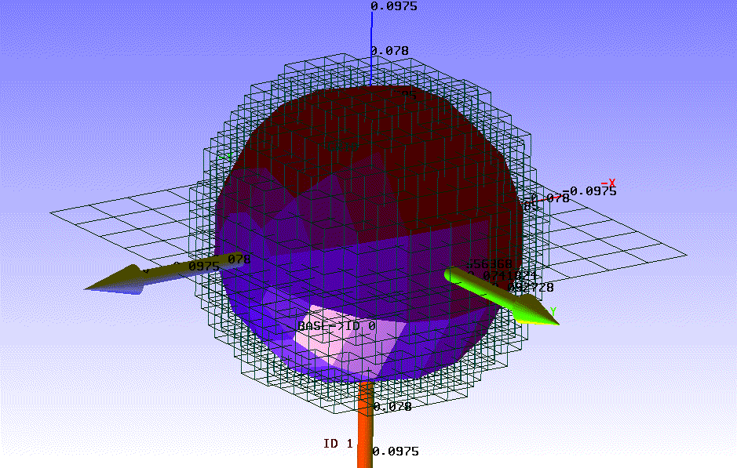
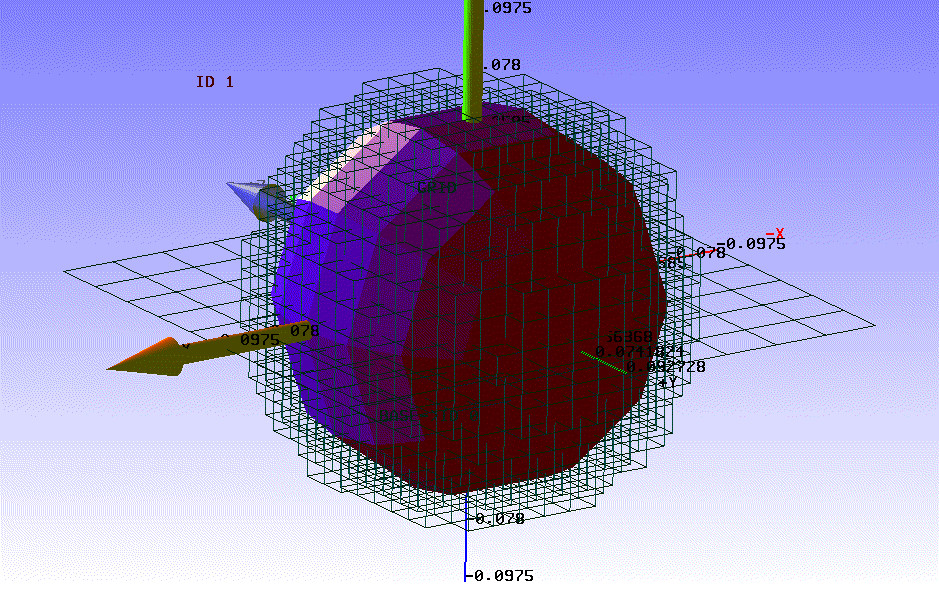

Brief Summary
Master’s in Computer Science with 5 years of work experience in leading multinational product companies as a software developer using C++ and strong CS fundamentals including Data Structures, Algorithms & OOP concepts
Project Description
Radar cross section is the measure of a target's ability to reflect radar signals in the direction of the radar receiver, i.e. it is a measure of the ratio of backscatter power per steradian (unit solid angle) in the direction of the radar (from the target) to the power density that is intercepted by the target. The RCS of a target can be viewed as a comparison of the strength of the reflected signal from a target to the reflected signal from a perfectly smooth sphere of cross sectional area of 1 meter square.
This project can be broadly divided into four main sections :
Data Obtained By Electromagnetic Simulation Of The Target
This is a just a data file out of 126 data files that we obtained after the electromagnetic simulation of the target.
1.847834e-18 1.446175e-17 1.033925e-16 6.725476e-16 3.961542e-15 2.102288e-14 9.996185e-14 4.234439e-13 1.588639e-12 5.248539e-12 1.519281e-11 3.839404e-11 8.462337e-11 1.631568e-10 2.773432e-10 4.208011e-10 5.782013e-10 7.293932e-10 8.541561e-10 9.360376e-10 9.645246e-10 9.360376e-10 8.541561e-10 7.293932e-10 5.782013e-10 4.208011e-10 2.773432e-10 1.631568e-10 8.462337e-11 3.839404e-11 1.519281e-11 5.248539e-12 1.588639e-12 4.234439e-13 9.996185e-14 2.102288e-14 3.961542e-15 6.725476e-16 1.033926e-16 1.446252e-17 1.854904e-18 1.365832e-17 1.026374e-16 7.030016e-16 4.370215e-15 2.453341e-14 1.236958e-13 5.568785e-13 2.224899e-12 7.839546e-12 2.421579e-11 6.524147e-11 1.528299e-10 3.113848e-10 5.548206e-10 8.744448e-10 1.238953e-09 1.605775e-09 1.933213e-09 2.188220e-09 2.349024e-09 2.403816e-09 2.349024e-09 2.188220e-09 1.933213e-09 1.605775e-09 1.238953e-09 8.744448e-10 5.548206e-10 3.113848e-10 1.528299e-10 6.524147e-11 2.421579e-11 7.839546e-12 2.224899e-12 5.568785e-13 1.236958e-13 2.453341e-14 4.370215e-15 7.030022e-16 1.026435e-16 1.371235e-17 View Complete Data...
Snapshots Showing The Course Of The Project
These are some of the snapshots which show the kind of wireframe model expected for a sample target (sphere in this case).
 